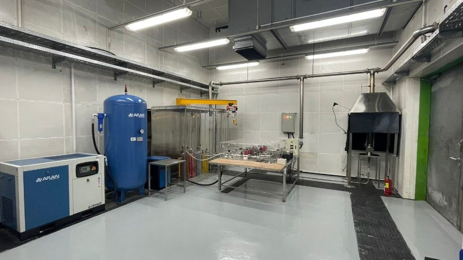

Facilities & equipmentFasilitas & peralatan設備・装置
Two laboratory spaces at FTMD ITB, Lab R (Refrigeration Engineering Laboratory, Labtek II) and Lab C (Gas Engine Laboratory), plus partner and central ITB facilities.Dua ruang laboratorium di FTMD ITB, Lab R (Laboratorium Teknik Pendingin, Labtek II) dan Lab C (Laboratorium Mesin Gas), ditambah fasilitas mitra dan laboratorium pusat ITB.FTMD ITBの2つの実験室、Lab R（冷凍工学実験室、Labtek II）とLab C（ガスエンジン実験室）、および共同利用・ITB共通設備。
Experiments and simulation under one roofEksperimen dan simulasi dalam satu atap実験とシミュレーションを一つの場所で
- Lab R: experiment area for burners, reactors, gas analysis and CO₂ mineralization; student rooms; PI officearea eksperimen untuk burner, reaktor, analisis gas, dan mineralisasi CO₂; ruang mahasiswa; ruang dosenバーナ、反応器、ガス分析、CO₂鉱物化の実験エリア、学生室、教員室
- Lab C: engine test bench, mass-flow control skids and simulation workstationsbangku uji mesin, panel kendali aliran massa, dan workstation simulasiエンジン試験台、流量制御ユニット、シミュレーション用ワークステーション
- Partner & ITB facilitiesFasilitas mitra & ITB共同利用・ITB設備: pulverized-fuel boiler simulator, XRF, XRD, TGA, SEM-EDS, BET, HPCsimulator boiler serbuk, XRF, XRD, TGA, SEM-EDS, BET, HPC微粉燃料ボイラシミュレータ、XRF、XRD、TGA、SEM-EDS、BET、HPC
All equipment is tracked in the lab inventory with location, PIC and maintenance date.Seluruh peralatan tercatat dalam inventaris lab beserta lokasi, PIC, dan tanggal perawatan.すべての機器は設置場所、担当者、保守日とともに研究室の台帳で管理しています。

What is in the labIsi laboratorium研究室の設備
Safety firstKeselamatan utama安全第一
Training on ammonia, compressed gases, flammables, lasers and electrical safety; gas detectors, flame arrestors and a buddy system for every run.Pelatihan keselamatan amonia, gas bertekanan, bahan mudah terbakar, laser, dan listrik; detektor gas, flame arrestor, dan sistem buddy di setiap percobaan.アンモニア、高圧ガス、可燃物、レーザー、電気の安全教育。ガス検知器、逆火防止器、すべての実験でバディ制。
SOPs & checklistsSOP & daftar periksaSOP・チェックリスト
Written procedures for combustion experiments, gas handling, equipment loans, HPC and lab computers, with pre- and in-experiment checklists.Prosedur tertulis untuk eksperimen pembakaran, penanganan gas, peminjaman alat, HPC, dan komputer lab, dengan daftar periksa sebelum dan saat eksperimen.燃焼実験、ガス取扱い、機器貸出、HPC、研究室PCの手順書と、実験前・実験中チェックリスト。
Access for partnersAkses untuk mitra共同研究者の利用
Equipment can be used within joint research projects. Ask us.Peralatan dapat digunakan dalam proyek riset bersama. Hubungi kami.共同研究の枠組みで装置を利用できます。お問い合わせください。